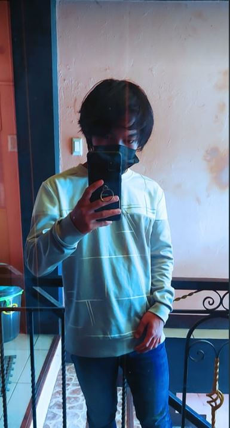

(Point the cursor to the picture to see the information)
Hi, I am JHON MIKAEL V. BADAJOS, I am 16 years old, and I am a boy who was born in Bukidnon, Malaybalay City on December 15 2005, as a second son of 5 children. My father's name is Miguel Badajos and my mother's name is Johncey Badajos. The short story, I started to study at school, I graduated from kindergarten named Bukidnon State University from 2010-2012, Elementary School still at Bukidnon State University from 2012-2017. High school, 3 years at San Isidro Collage, and now I transfered and studying at Bukidnon National Highschool, I started it from 2021 until now. My Hobby is playing video games and reading manga, I really love playing video games because its the only way to make myself happy. Besides that, I also love reading manga that makes me feel include in the story is presented.

My name is Henry James Nambatac. I was born August 14, 2004, in Malaybalay City. My mother's name is Shati Nambatac, and I have 1 sister, Phia Nambatac. Graduated Elementary at Malaybalay City Central School from 2012-2017, while there I participated basketball. In seventh grade until now I was enrolled at Bukidnon National Highschool and still studying and learning. My Hobby is playing video games and reading manga, I really love playing video games because its the only way to make myself happy. Besides that, I also love reading manga that makes me feel include in the story is presented.
"Its About Tribe, Its About Power, We Stay Hungry, We Devour, Put In The Work, Put In The Hours, And Take What's Ours"